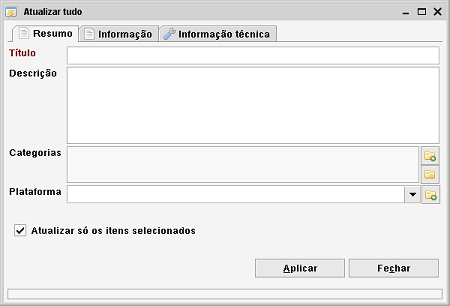

Atualizar tudo
Caminho de menu: Ferramentas > Atualizar tudo
ou clique com o botão direito no item na vista e selecione Atualizar tudo
A função Atualizar tudo é acedida pelo menu que aparece quando clica com o botão direito num item na vista.

Esta funcionalidade permite-lhe atribuir rapidamente valores selecionados a campos escolhidos.
Tem a opção de atualizar todos os itens mostrados na vista ou atualizar
só itens selecionados.